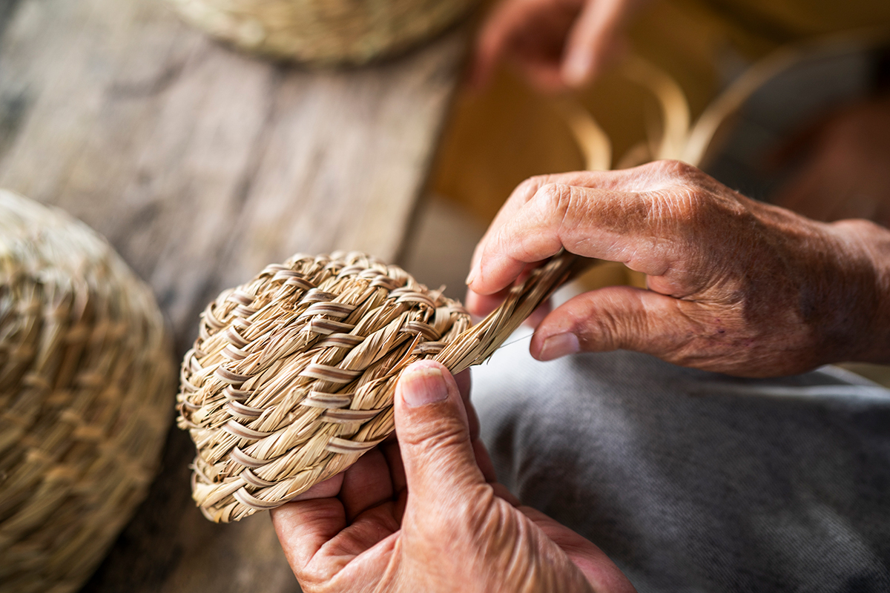
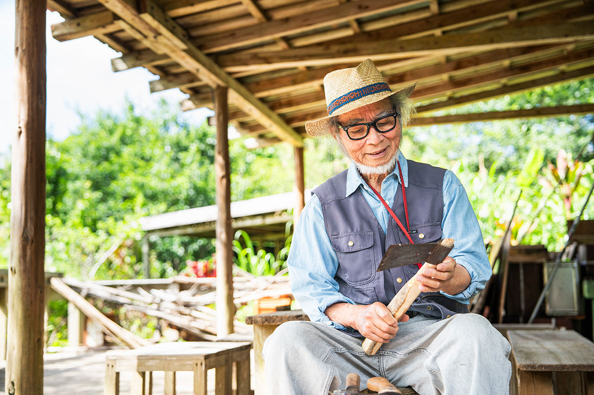
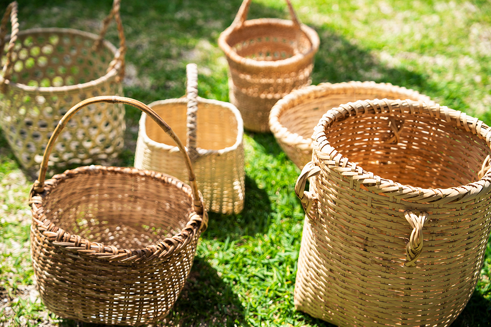
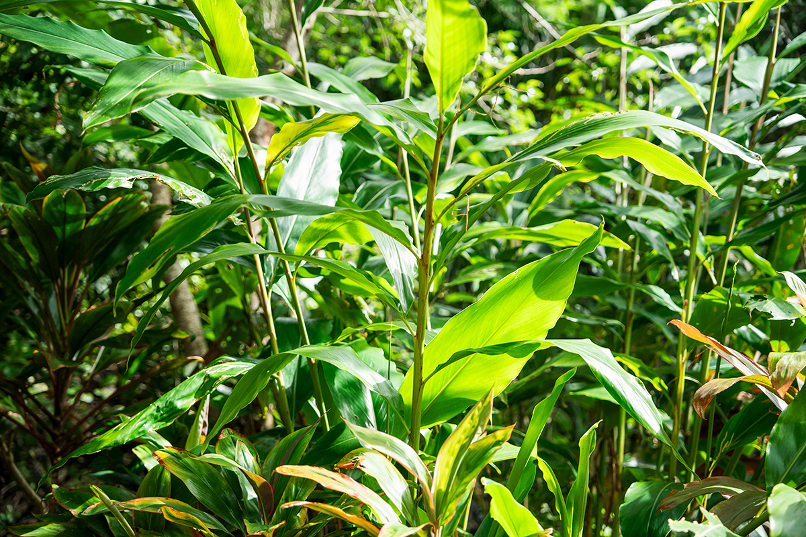
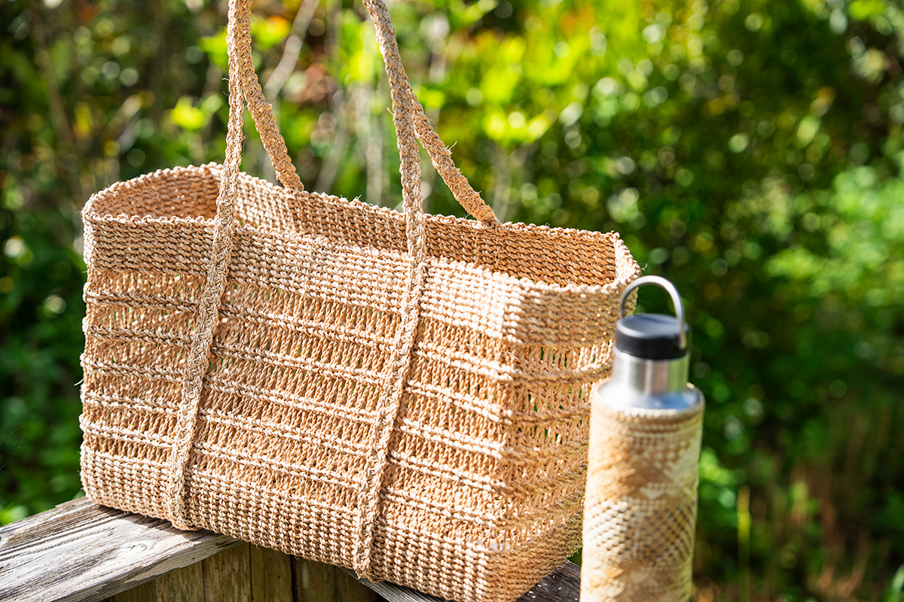
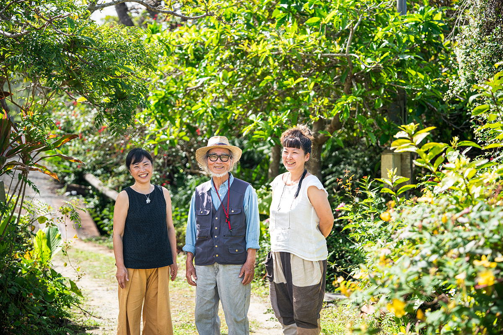
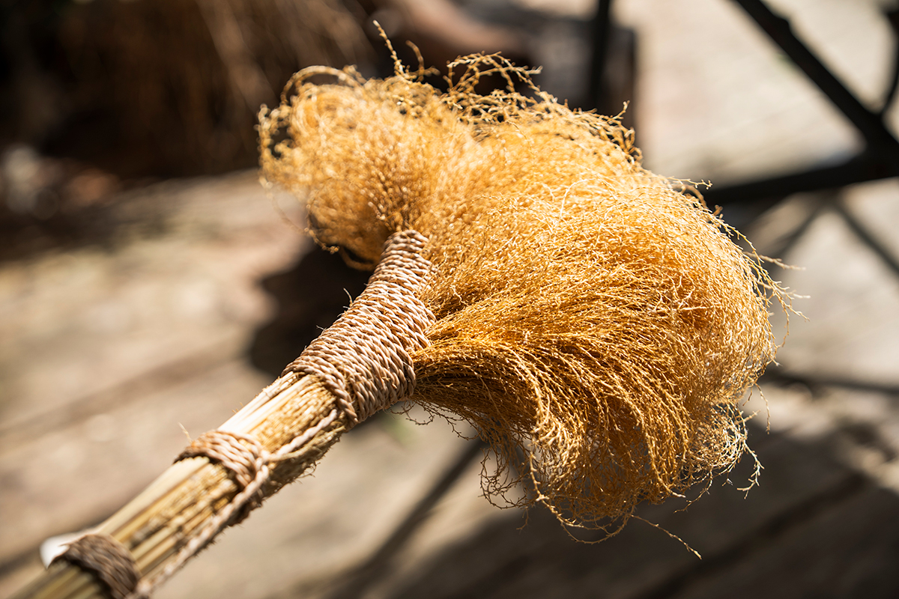
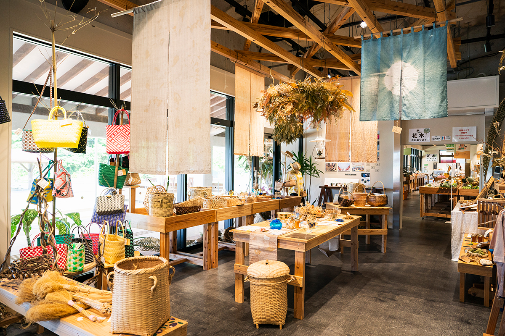

Префектура Окинава · Наго, Ямбару · ремёсла
Мастерская «Мансоан» в Ямбару: корзины из бамбука и лиан, как их плели всегда

Восточный берег Ямбару, севера острова Окинава, веками был отрезан горами от остального мира, и почти всё нужное для жизни люди делали сами. В мастерской «Мокумоку хякунэн-дзюку Мансоан» этому умению учат до сих пор.
Место
Сад у ручья на берегу залива Оура
Ямбару называют лесистый север острова Окинава. Его восточное побережье окружено особенно глухими горами, и товары сюда долго почти не доходили: еду, одежду и жильё местные жители обеспечивали себе сами. Ремесло, выросшее из такой жизни, сохраняет мастерская «Мокумоку хякунэн-дзюку Мансоан».

Дорога к мастерской идёт на север вдоль восточного берега города Наго, справа остаётся спокойный залив Оура. Стоит войти на участок, и слышно, как журчит чистый ручей. Вокруг растут субтропические фруктовые деревья и дикие травы, густо поднимаются бамбук хорай и альпиния, похожая на имбирь. Место выглядит настоящим садом.
Здесь родился и вырос Масатоси Симабукуро, которого все зовут Сэбин.
«В Ямбару люди всегда жили дарами природы. И еду, и вещи для хозяйства делали почти всё сами. В горах резали бамбук и лианы, плели из них сита „баки“ и корзины „тиру“, вырезали крышки для котлов и рисовые лопатки „мисигэ“. Литые серпы и мотыги делали в деревенской кузнице, а рукояти мы вытёсывали сами из дерева, срубленного в горах»
Сэбин, основатель мастерской
История
Зачем музейщик взялся за бамбук

С механизацией и электричеством жизнь, в которой всё делали своими руками, стала уходить. Сэбин хотел вернуть людям ту связь с природой, какой она должна быть, и с этой мыслью открыл «Мансоан».
Ещё когда он руководил музеем Наго, ему казалось, что экспозиция не передаёт главного. Понять, зачем нужна вещь, можно только поработав ею, поэтому он устраивал занятия, где гости сажали рис, ловили рыбу и мастерили. После выхода на пенсию он продолжил это дело, а когда открылась мастерская, всё больше людей стали просить научить их местному ремеслу. Так появились курсы, в основном по работе с бамбуком. Им около 20 лет, и за это время их окончили примерно 200 человек.
Изделия Сэбина и мастериц группы «Куси но тэсигото» продают в парке «Вансака Оура». Каждая вещь существует в одном экземпляре, двух одинаковых не найти.
Курс
Семь десятых работы до первого плетения

Занятие начинается в горах: материал ученики добывают сами. С бамбуком работа выглядит так. Срезанные тесаком и пилой стебли очищают от веток и листьев, срезают твёрдые узлы, раскалывают ствол и подгоняют полосы по размеру. Потом их строгают ещё тоньше, пока не получится тонкая лента для плетения, и только после этого начинают плести. На изготовление лент уходит около 70% всего времени и сил.

Одна из учениц, участница группы «Куси но тэсигото», заново открыла для себя ремёсла, которые окружали её с детства.
«Думаешь, какую форму хочешь сделать, а потом прикидываешь, из чего. Теперь смотрю на горы и поля как охотница. В округе много старших, у кого руки золотые, и я хочу и дальше работать вместе с ними. Кого-то учишь сама, у кого-то учишься: ремесло, по-моему, это способ общаться»
ученица курса

Другая ученица, чьи родители родом из Ямбару, ходит к Сэбину около десяти лет. Она придумала проект «Отряд исследователей силы жить на острове»: снимает на видео традиции Ямбару и выкладывает ролики в интернет.
«Сэбин передаёт не просто технику. Он передаёт житейскую мудрость, которая за ней стоит. Его движения перетекают одно в другое, и это красиво. Такое единство с природой бывает только у тех, кто прожил жизнь в горах»
ученица курса
Через Сэбина знание предков доходит до тех, кто живёт сегодня.

Где купить
Лавка в парке «Вансака Оура»
Вещи, которые делают в «Мансоан», продаются в парке «Вансака Оура», тоже на берегу залива Оура. Здесь работает лавка местных продуктов, а рядом с овощами на деревянных столах стоят корзины, сумки, веники и ткани.

Парк «Вансака Оура»
- Адрес
- префектура Окинава, Наго, Оура, 465-7
- Телефон
- +81 980-51-9446
- Часы работы
- 10:00–17:00 (лавка)
- Выходные
- 2-я и 4-я среда месяца (в июне каждая среда)
Фото: Тётаро Оован.